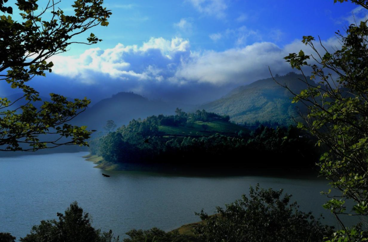
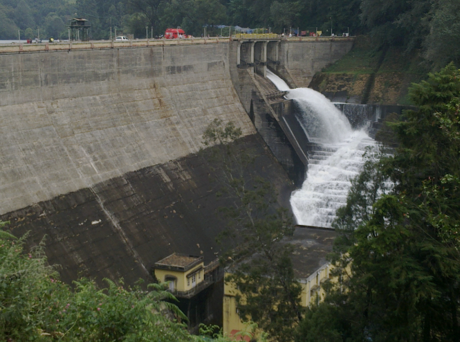
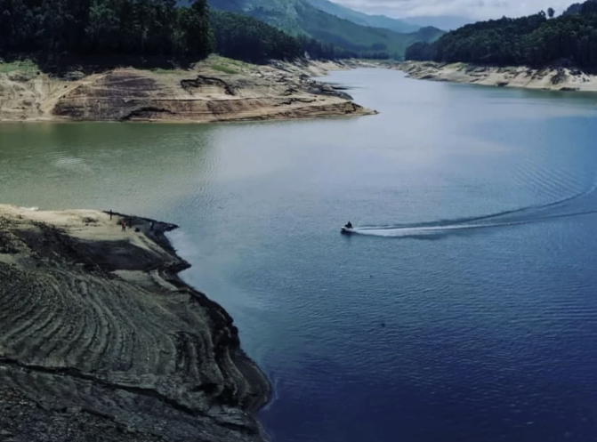
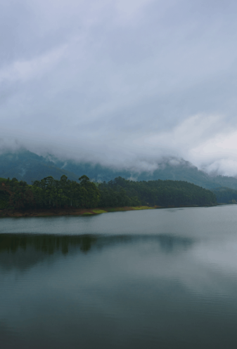
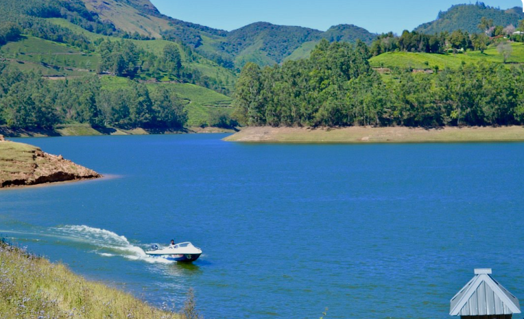

Mattupetty Dam is a famous concrete gravity dam located near Munnar in Idukki district, Kerala. Built across the Mattupetty River, the dam is surrounded by beautiful hills, tea plantations, and dense forests. The calm reservoir reflects the surrounding greenery, making it one of the most picturesque tourist attractions in Munnar.
Visitors can enjoy boating on the reservoir, photography, and sightseeing while experiencing the cool climate and fresh mountain air. The area is also home to many species of birds and wild animals, making it a favourite destination for nature lovers. Mattupetty Dam is an ideal place for families, students, and tourists who wish to enjoy the scenic beauty and peaceful atmosphere of Munnar.





Mattupetty Dam is one of the most famous tourist attractions in Munnar, located in Idukki District, Kerala. Built across the Mattupetty River, the dam is surrounded by rolling hills, tea plantations and forests. It is well known for its scenic beauty, boating facilities and the nearby Indo-Swiss Dairy Farm. Thousands of tourists visit the dam every year.
Mattupetty Dam was constructed in 1953 as part of the Pallivasal Hydroelectric Project. It was built mainly for hydroelectric power generation and water conservation. Over the years, it has become one of Munnar's most visited tourist destinations because of its beautiful reservoir and surrounding landscape.
The dam offers boating on the beautiful reservoir, panoramic views of the surrounding hills, tea plantations and forests. Visitors can also enjoy speed boating, photography, bird watching and nature walks.
The area around the dam is rich in evergreen forests, tea gardens and grasslands. Visitors can see elephants, birds, butterflies and many native plant species of the Western Ghats.
Today, Mattupetty Dam is one of Kerala's most popular tourist attractions. It is famous for boating, scenic beauty, wildlife, tea plantations and its peaceful environment. It plays an important role in tourism and water management in the Munnar region.